Alternadors, electrobombes, electroventiladors i ferramenta de bronze naval, fabricats per a un ús intensiu a bord.

Alternador de corrent continu a 24V per a la càrrega de bateries a través de corretges, amb escombretes d'alt rendiment i regulador elèctric incorporat. Connexionat pràctic, pensat per a un muntatge senzill a bord.
| Aplicació | Càrrega de bateries via corretges |
| Tensió | 24V corrent continu |
| Intensitat | 150A (tipus 3.500) / 250A (tipus 5.000) |
| RPM | Mínimes 1.500 / Màximes 5.000 |
| Politja | Tipus A o B, 100mm de diàmetre |
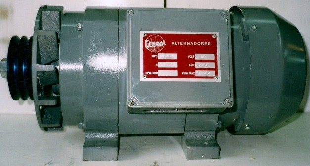
Alternador destinat a la pesca de cèrcol. Permet alumbrat directe fins a 15 làmpades de 500W, amb la il·luminació regulada a partir de les revolucions del motor o mitjançant reòstat regulador d'intensitat.
| Ús recomanat | Pesca de cèrcol |
| Alumbrat directe | Fins a 15 làmpades de 500W |
| Regulació | Per revolucions del motor o reòstat |
| Politja | Tipus A o B, 140mm de diàmetre |
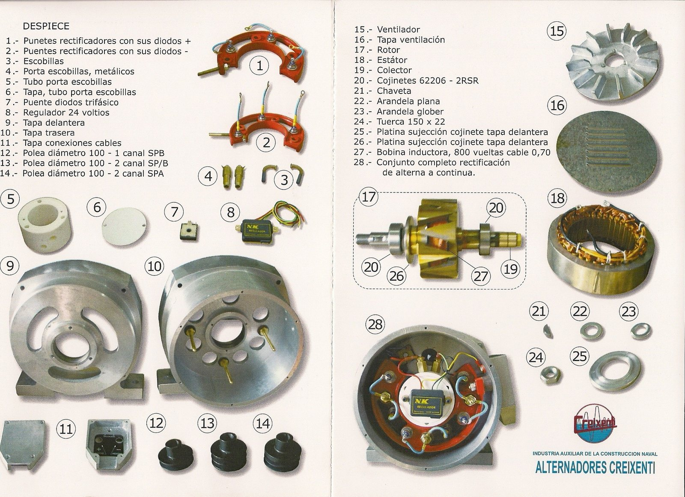
Cada alternador Creixenti es dissenya i es munta íntegrament al nostre taller: des del bobinatge de l'inductor fins al conjunt de rectificació, per garantir un rendiment fiable en les condicions més exigents del medi marí.
Toca la imatge per ampliar-la i veure tots els detalls.
Bombes autoaspirants en 24V i 220/380V per al trasiego de líquids, la refrigeració, el baldeig i l'extinció d'incendis.

Trasiego de gasoil dels tancs, autoaspirant.
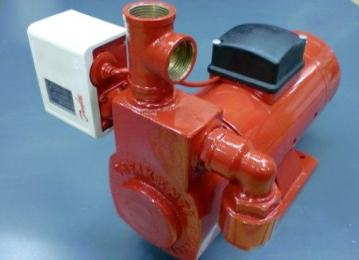
Aigua dolça per a WC i dutxa, autoaspirant.
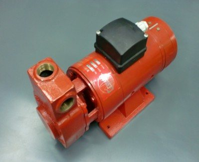
Buidatge de sentines (aigües brutes), compatible amb automàtic de sentina.

Refrigeració del motor principal o baldeig i neteja de coberta. Embragatge elèctric 24V amb politja, eix lliure, o motor 4CV 220/380V.
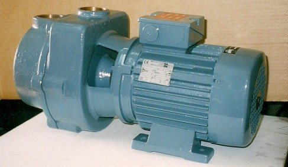
Refrigeració del motor principal, baldeig i neteja de coberta.
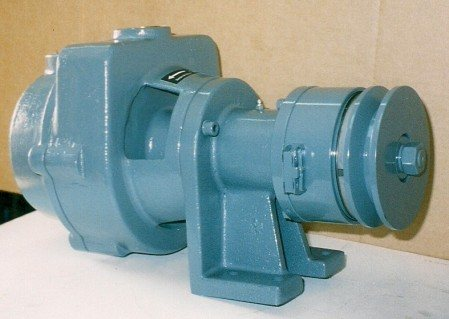
Mateix ús que l'anterior, amb embragatge elèctric 24V i politja. Opció d'eix lliure.
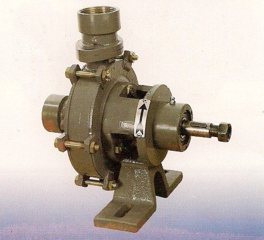
Neteja de coberta i baldeig, amb eix lliure o embragatge elèctric.
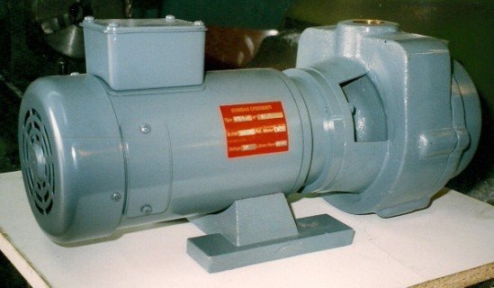
Extinció d'incendis a la sala de màquines.
Extractors fabricats en alumini marí, en 24V i 220/380V, amb capacitats de 3.600 a 6.000 m³/h.
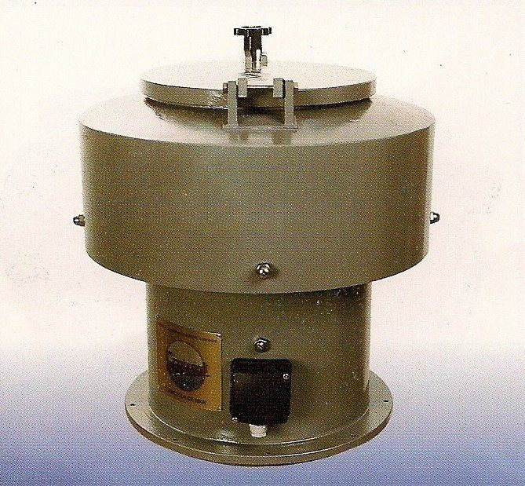
Ventilació de la sala de màquines amb sortida a l'exterior. Opció de tapa tallafocs que tanca la sortida a coberta en cas d'incendi.

Pensat per intercalar-se directament a la canonada de ventilació de la sala de màquines.
Peces fabricades en bronze naval per a pas de casc, protecció d'entrades d'aigua i il·luminació submarina.

Mides estàndard de 100mm de llarg; altres mides sota demanda.
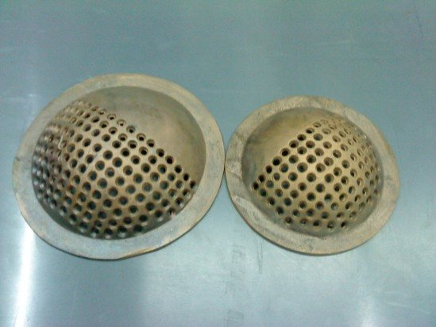
Cobreixen les entrades d'aigua del casc i les protegeixen de qualsevol obstrucció.
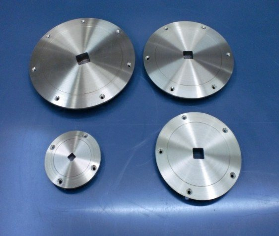
Per al repostatge de combustible del vaixell, en cinc mides diferents.
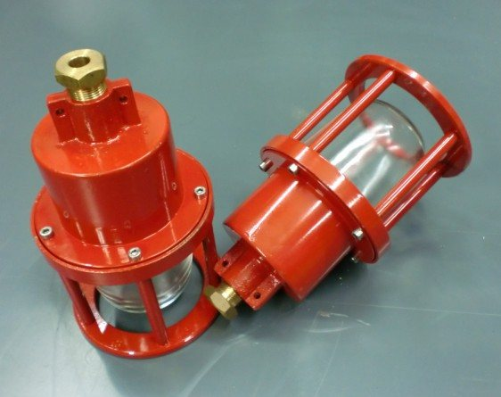
Amb possibilitat de 4 làmpades a l'interior, protector de vidre i tancament amb juntes i cargols inoxidables.